Our Products & Solutions
Driveway Gates (Materials & Styles)
Custom Decorative Ornamental Wrought Iron and Aluminum Driveway Gates, Estate Metal Designs, a great selection of aluminum driveway gates in modern designs (welded, powder coated), custom made to your specs with installation hardware, privacy options with metal backing, wood insert and privacy panels, and more.
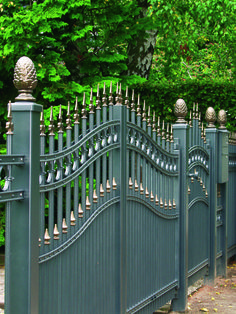
Wrought Iron Design
Custom decorative ornamental wrought iron driveway gate.
View Details
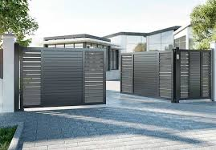
Aluminum Modern
Great selection of modern aluminum driveway gates.
View Details
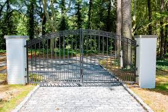
Custom Estate Gate
Custom decorative ornamental estate metal driveway gate.
View Details
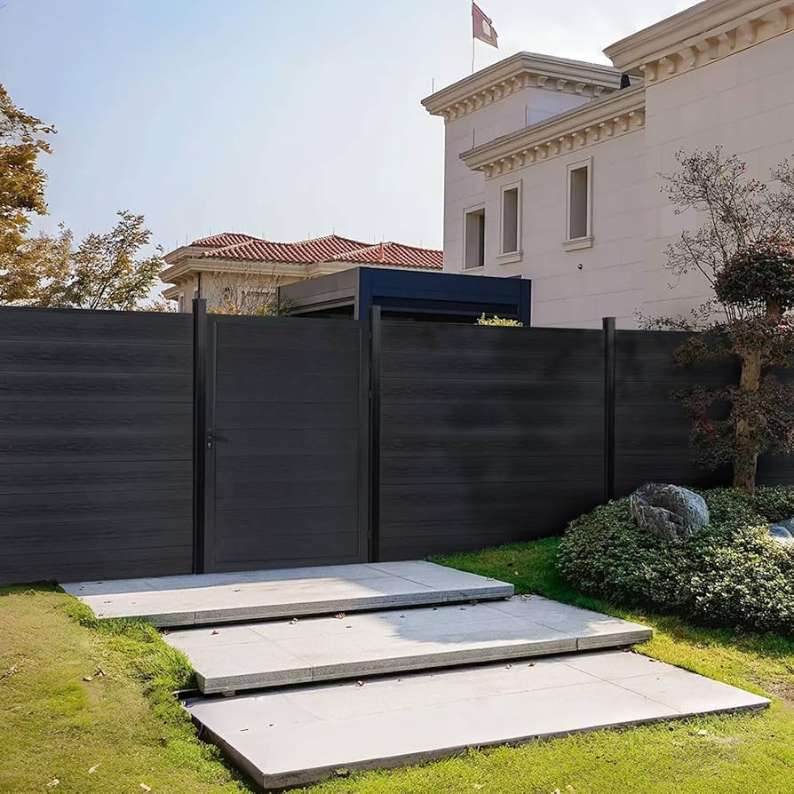
Privacy Options
Privacy gate with metal backing and wood insert.
View Details
Garden & Walk-Through Gates
Garden Gates, Walk Thru Gates and Garden Walk Through Gates available in wrought iron or aluminum. Custom made garden gates to perfectly match your driveway gates and fencing.
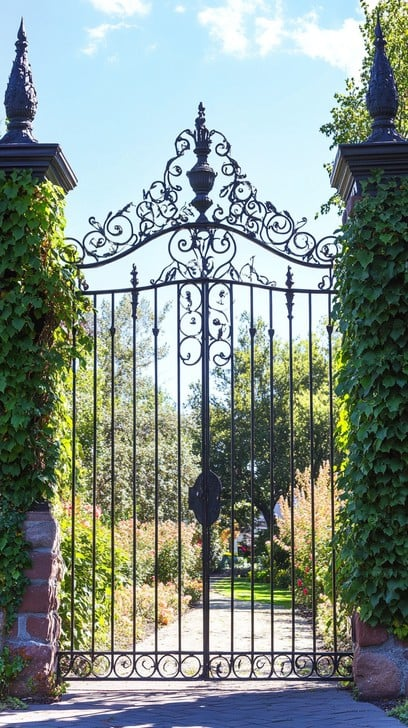
Elegant Garden Gate
Stylish wrought iron garden gate.
View Details
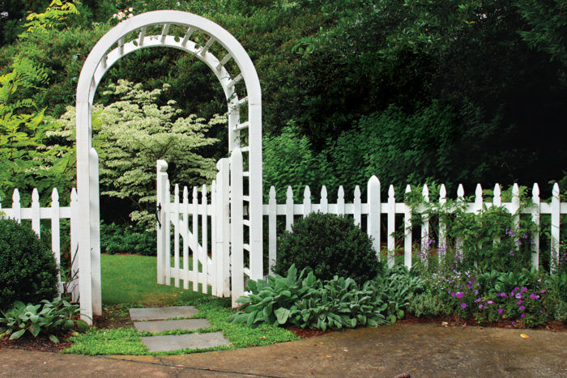
Walk-Through Design
Modern aluminum walk-thru garden gate.
View Details
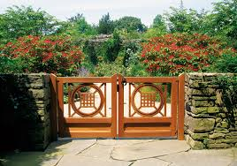
Custom Match Gate
Custom made to match your driveway and fencing.
View Details
Fences
Explore our fences including aluminum picket fences, pool fences for security, and custom fences featuring wrought iron, metal design, and steel ornamental details.
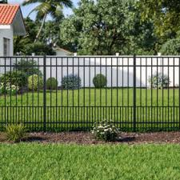
Aluminum Picket Fence
Durable, stylish aluminum picket fence.
View Details
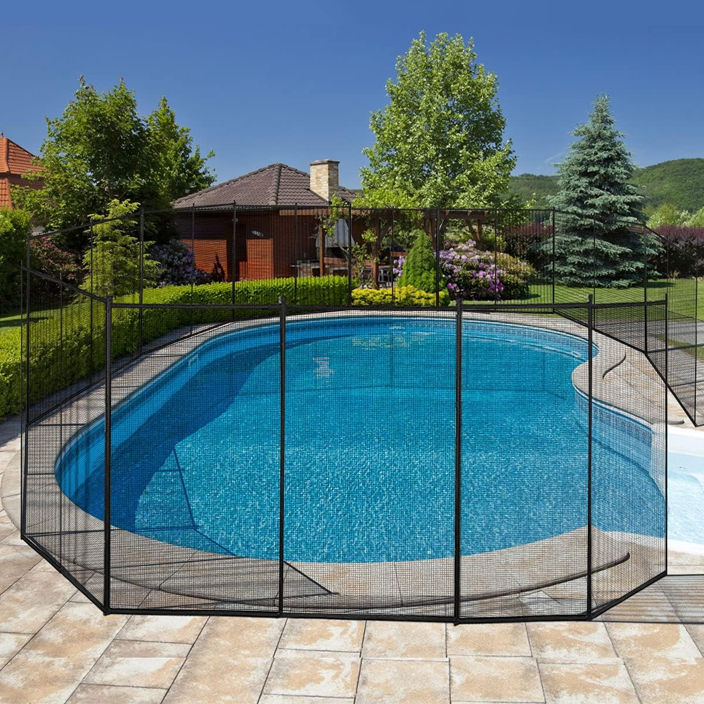
Pool Security Fence
Secure pool fence with modern design.
View Details
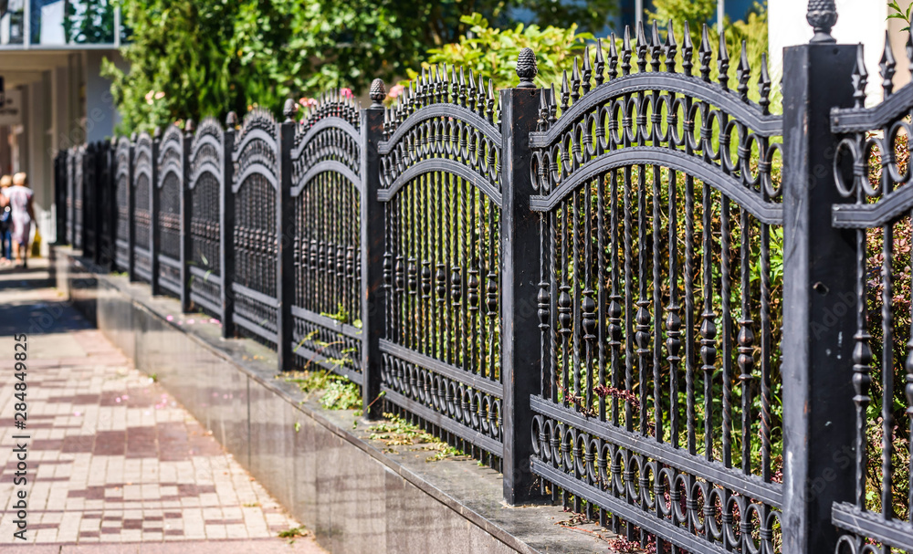
Custom Wrought Iron
Custom ornamental wrought iron fence.
View Details
Railings
Our railings range covers deck railings, iron railings, porch railings, balcony railings, and handrails. We offer custom modern railings for balconies, porches, decks, and pool areas – primarily in aluminum.
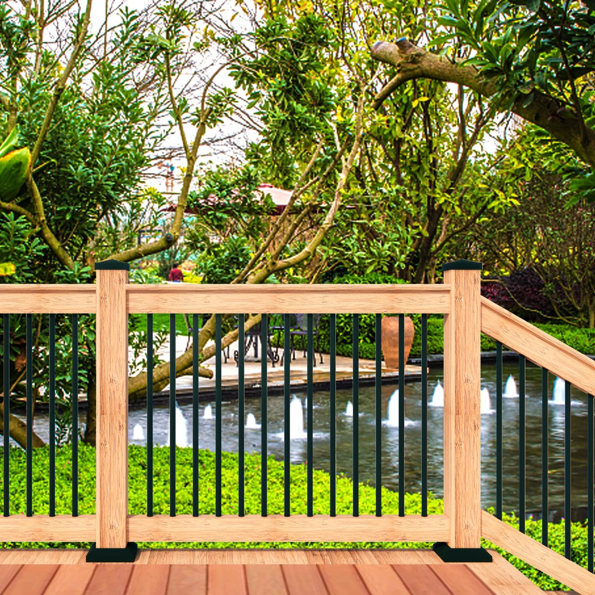
Deck Railing
Custom aluminum deck railing.
View Details
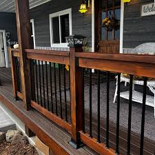
Porch Railing
Elegant modern porch railing design.
View Details
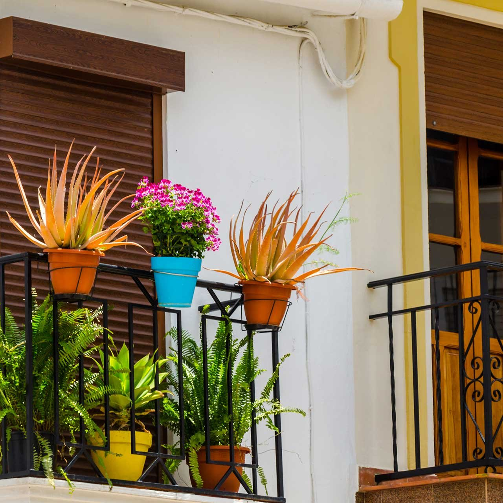
Balcony Railing
Stylish balcony railing for safety and look.
View Details
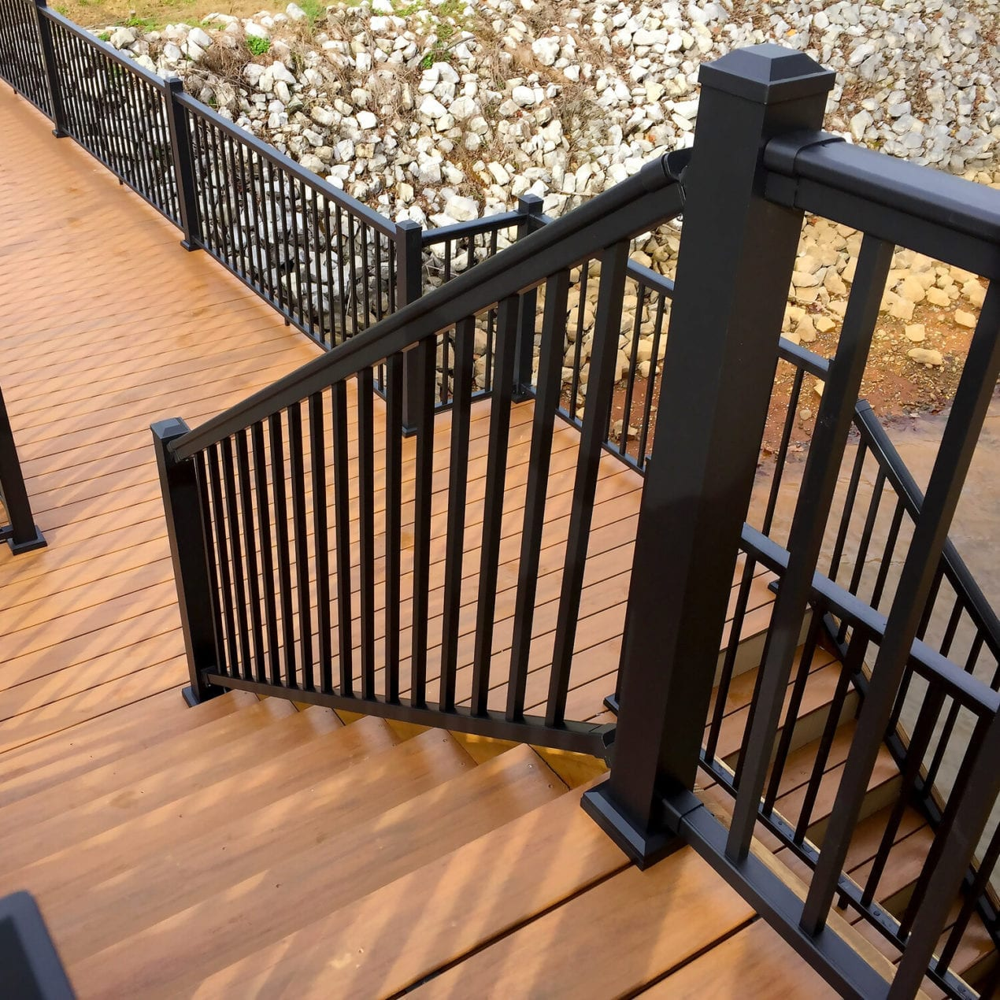
Handrail
Custom handrail available in aluminum.
View Details